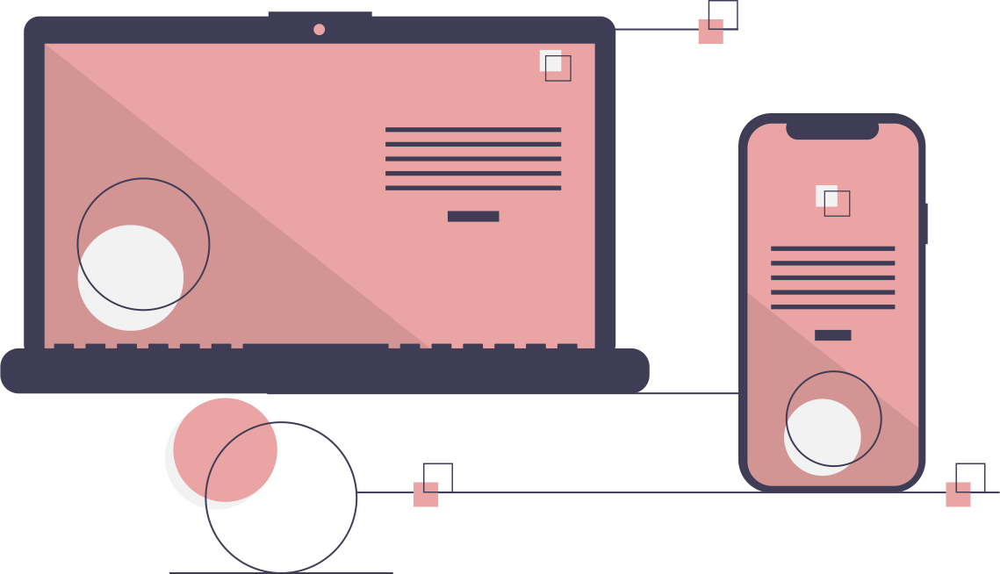

Software Development
Fom the concept to code
Creating custom software from scratch can be a composite process. By a detailed business analysis, I will go through what is your company's software requirements and from there I will formulate a plan.
I can recommend the best methods and processes to use, and create a timeline for developing the software solution. Once the plan is approved, I can begin the development.
Methodology
- Business Analysis
- Here we formulate the concept; once the scope of the project is defined, a list of desired design features and requirements can be created.
- Project Planning
- Prototyping involves looking at the idea from all perspectives, including everything from infrastructure, networking, data design, mobility, access, and security.
- Development
- My main objective is to deliver code designed with your business landscape in mind that is also, easy to test and manage.
- Testing
- After each release is completed, testing is performed iteratively. If discovered any issues in the development phase, they are much easier to resolve.
- Deliver
- I can seamlessly transfer product knowledge to your business. During this phase, change requests, impact analysis, and all pending documentation is completed.
Say Hello!

© Amanda Ciobanu | 2020